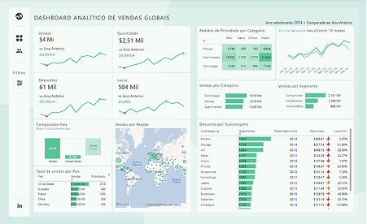
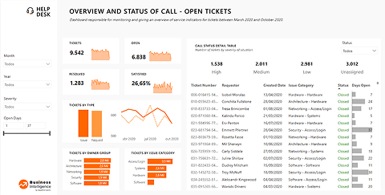

Desenvolvedora de soluções inteligentes
Aqui você pode conhecer melhor o meu trabalho como analista de dados e BI.

A proposta deste projeto foi desenvolvida no curso de Análise de Dados com Power BI da Data Science Academy. O objetivo foi criar um dashboard interativo para análise de vendas de uma empresa fictícia, utilizando Power BI. Inicialmente, o projeto foi implementado com uma abordagem mais simples e, posteriormente, aprimorado como um desafio pessoal. As melhorias buscaram fornecer insights estratégicos por meio de métricas que identificam padrões sazonais de vendas, auxiliando na tomada de decisões do time comercial.

Este dashboard foi desenvolvido para monitorar e analisar o desempenho do suporte ao cliente em uma central de atendimento. A solução permite acompanhar métricas-chave, identificar gargalos operacionais e fornecer insights estratégicos para a tomada de decisões. O objetivo é facilitar a gestão do Help Desk por meio da visualização intuitiva de KPIs (Key Performance Indicators), ajudando a equipe a otimizar o tempo de resposta e a eficiência na resolução de chamados.
Email: justinojaqueline@gmail.com